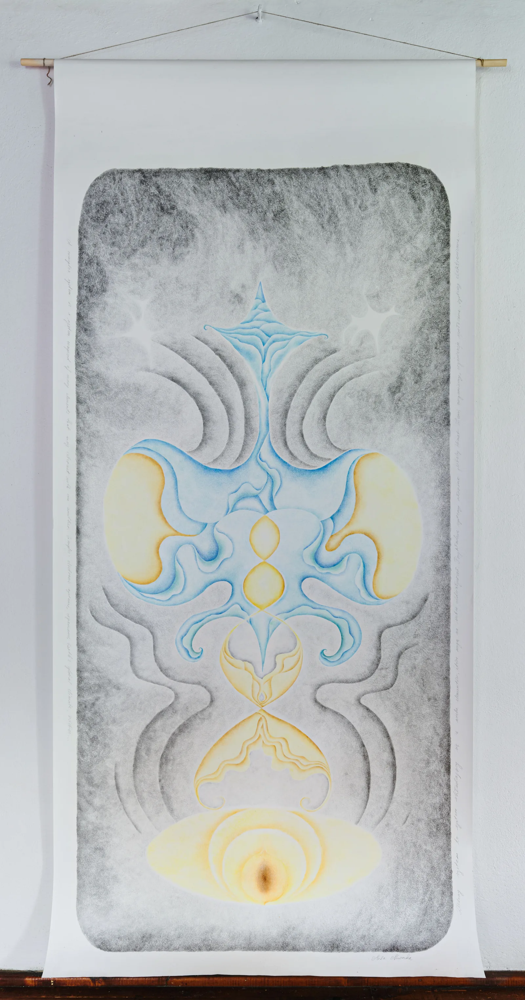

Urinary system
from Feedback series
wax-based color pencils on paper
200 x 100 cm
2025
This image is a vision of the urinary system. Kidneys are the power center in our body - they play a crucial role in our lives. The kidneys like the warmth. As an infant my son strugled with an issue within his urinary system, grade IV ureteral wall thickening, his kidneys were in danger, because of the constantly recurring inflamations. For several years he was under the care of the doctors of the Center of Mother and Child in Warsaw. Currently he is healthy.
